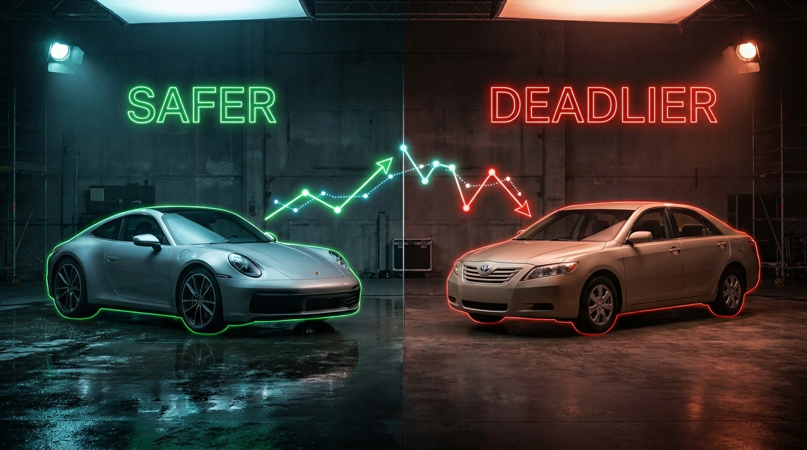

A Porsche 911 Is Safer Than Your Camry
Somewhere a parent is telling their teenager they can’t have a sports car because it’s too dangerous, then handing them the keys to a Honda Accord—a vehicle with a FARS fatality rate of 3.07 deaths per 100 million VMT.[1] The Porsche 911 sits at 0.69. The thing they fear is 4.5 times safer than the thing they chose.
I ranked all 17 sports cars in the FARS dataset by per-VMT fatality rate, then compared them against the sedan class average of 1.02 deaths per 100M VMT.[1] Nine sports cars came in under. The BMW Z4 at 0.46. Toyota Celica at 0.63. Acura RSX at 0.68. The Porsche 911 at 0.69. Even the Mitsubishi Eclipse—a car nobody would mistake for a safety-first purchase—logged 0.81. All of them lower than a Toyota Camry (2.03), Honda Civic (2.25), or Ford Focus (2.52).
Not lower by a hair. Lower by multiples. The Chevrolet Impala kills its occupants at 5.00 per 100M VMT—seven times the rate of a Porsche 911.[1] Your insurance company thinks the Impala is the sensible choice. FARS disagrees.
But the sports car class splits violently in half. Below the sedan average: the Z4, Z3, Celica, RSX, 911, Boxster, Eclipse, Tiburon, Challenger. Above it—way above it—the Nissan 350Z (1.61), Corvette (1.52), Scion tC (2.30), Camaro (3.44), Mustang (6.02), and the Hyundai Veloster at a staggering 8.54.[1] Same class designation. Twelve-fold spread in fatality rates. Calling something a “sports car” tells you almost nothing about how likely it is to kill you.
The obvious explanation is demographics. Porsche 911 buyers average around 50 years old, earn north of $200K, and disproportionately treat the car as a weekend toy.[2] Mustang buyers skew younger, with a much wider income band and higher daily-driver usage. Different humans, different outcomes, regardless of sheet metal.
Except the toxicology data complicates that tidy story. The Porsche 911 has a 22.8% impairment rate in fatal crashes—meaning nearly one in four drivers who died in a 911 had alcohol or drugs in their system.[1] The Corvette: 26.2%. These are not sober, cautious grandpas. These are wealthy people driving drunk in fast cars. And yet the overall death rate stays low. A 911 with 22.8% impairment still kills at a lower rate than the Toyota Camry, which carries a much wider cross-section of sober commuters. That gap cannot be explained by driver behavior alone. The vehicle’s engineering—mid-engine balance, wider tires, superior braking, decades of iterative Nürburgring development—is doing real work.
Meanwhile, the Veloster posts a 17.4% impairment rate, the lowest of any sports car in the dataset. Its drivers are the soberest in the class. Its death rate is the highest at 8.54.[1] Sober people are dying at extraordinary rates in a car that Hyundai marketed as a fun, affordable sports car. The Veloster’s combination of light weight (2,600 lbs), an asymmetric three-door design that complicated crash energy management, and a buyer demographic of younger drivers on tighter budgets created a perfect storm of vulnerability. IIHS gave the 2019 Veloster “Acceptable” on driver-side small overlap; the 911 earned “Good” across every metric.[3]
Original Analysis
The novel finding here is the cross-tabulation of per-VMT fatality rate against in-crash impairment rate across the sports car class. Four vehicles occupy the “high impairment, low death rate” quadrant (911, Boxster, Corvette, BMW Z models)—suggesting vehicle engineering can compensate for driver behavior. One vehicle (Veloster) occupies the opposite corner: low impairment, catastrophic death rate. That inversion—sober drivers dying more in worse cars while drunk drivers survive in better ones—is the actual safety story the sports car label obscures.
Methodology
Death rates are per 100 million vehicle miles traveled, estimated from FARS 2014–2023 data using fleet size and NHTS average annual mileage.[1][4] Impairment rates from FARS toxicology reports (BAC > 0 or drug-positive). “Sports Car” classification follows the FARS body type codes for 2-door coupes and roadsters designated as sports/GT vehicles.
Limitations
Fleet sizes for several sports cars are small—BMW Z4 at 43,750, Porsche Boxster at 26,250—introducing meaningful statistical noise. A handful of additional fatal crashes could shift a rate by 0.2 or more. VMT estimates use NHTS average annual mileage (11,500 miles/year), not actual odometer readings; sports car owners who drive fewer discretionary miles would have an inflated per-VMT rate, meaning the true safety advantage could be even larger than shown. FARS captures fatal crashes only—roughly 36,000 of ~6.7M annual crashes. A vehicle with a low fatality rate might still generate high rates of serious injuries.
Strongest Counterargument
The selection effect dwarfs everything. Porsche 911 owners are disproportionately older, wealthier, and more experienced. They drive fewer miles in better conditions—weekends, dry roads, optional trips they skip when conditions deteriorate. If you transplanted the median Honda Accord buyer (younger, tighter budget, daily commuter in all weather) into a 911, the rate almost certainly wouldn’t stay at 0.69. The car may be engineered better, but the person sitting in it matters more. IIHS has published extensively on how driver demographics—age, sex, income—confound vehicle-level safety comparisons,[2] and the sports car segment is where that confounding hits hardest. This analysis cannot separate the car from the driver. Nobody’s can.
Sources & References
- NHTSA, Fatality Analysis Reporting System (FARS), 2014–2023. nhtsa.gov
- IIHS, Fatality Statistics: Driver Demographics & Vehicle Size/Weight. iihs.org/fatality-statistics; iihs.org/vehicle-size-and-weight
- IIHS, Vehicle Ratings. iihs.org/ratings
- NHTS, National Household Travel Survey, annual VMT estimates. nhts.ornl.gov